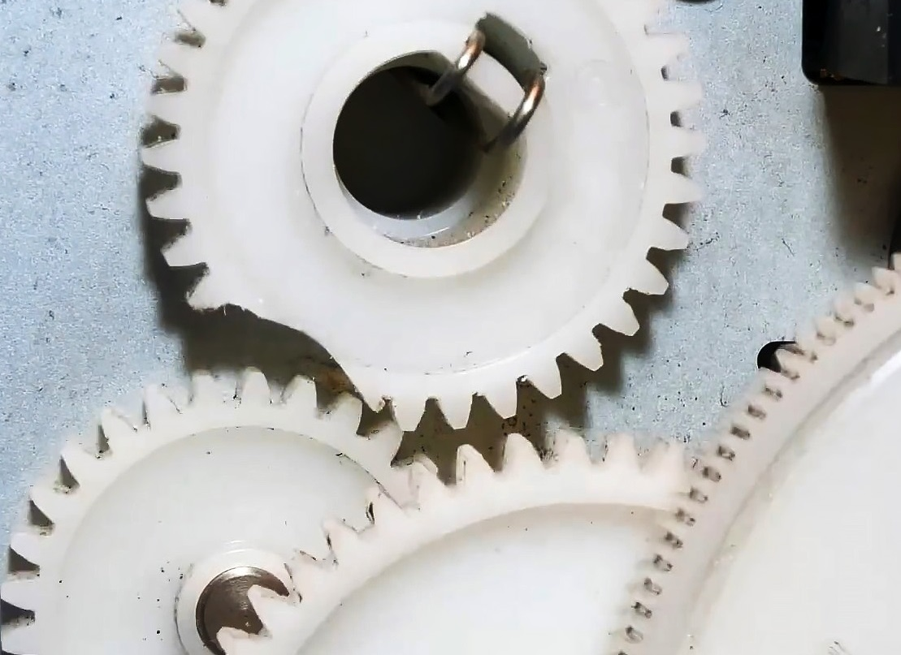

Inspection interne du moteur
Tu as ouvert le moteur pour observer la transmission.
À l’intérieur du moteur, tu découvres un engrenage en plastique fissuré / cassé.
C’est lui qui empêche le moteur de transmettre correctement le mouvement à la roue.

Journal de mission
INFO
Tu as identifié la panne : un engrenage interne est cassé.
Consigne
Choisis maintenant comment réparer le robot, en pensant à la fois à l’efficacité, au coût et à l’impact environnemental.
Quelle solution de réparation choisis‑tu ?